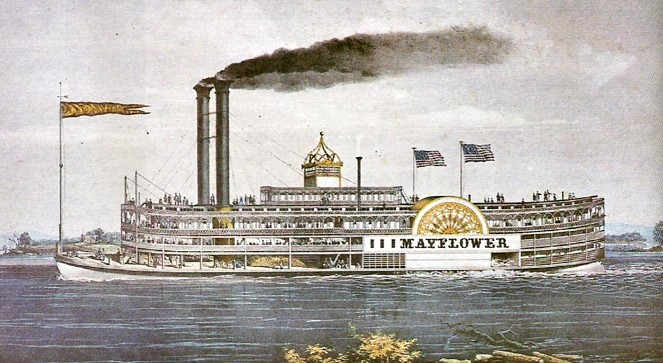
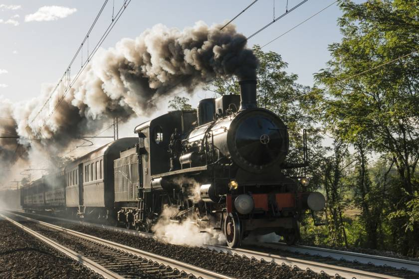

Si sviluppa l’industria chimica.
La rivoluzione industriale interesso molte fabbriche tessili, che richiedevano quantità sempre maggiori di
candeggianti, di coloranti e di sgrassanti, si ricorse ai composti chimici che si potevano produrre nelle quantità desiderate
in industrie chimiche, in questo periodo troviamo il padre della chimica moderna(Antoine-Laurent Lavoisier),
per le quattro scoperte basilari della nuova scienza.
|
 |
Il vapore viene applicato alle navi.
Il progresso industriale fu accompagnato da quello dei trasporti, risultati importanti si ottennero nella navigazione a vapore,
grazie al primo battello a vapore chiamato “Piroscafo” in Francia, ma la navigazione fluviale ebbe grande sviluppo
in America.
| |
|
 |
Il vapore viene applicato anche ai treni.
Più rapido fù lo sviluppo delle locomotive a vapore, all’inizio pesavano troppo e spezzavano i binari in
ghisa, furono degli ingegneri inglesi a costruire locomotive più leggere, la prima linea ferroviaria del mondo fu
la Stockton-Darlington, collegava le miniere di carbone con la costa, sempre gli stessi ingegneri decisero di costruire una
locomotiva più veloce, The Rocket.
|
Una nuova energia: l'elettricità.
Nel Settecento l'elettricità era praticamente sconosciuta, veniva usata solo per giochi da salotto, ma tramite
esperimenti si riuscì a raggiungere al parafulmine, si arrivò ad avere la prima elettricità continua con la pila,
inventata da Alessandro Volta, aprendo la strada all’utilizzo dell’elettricità in campo industriale.
|